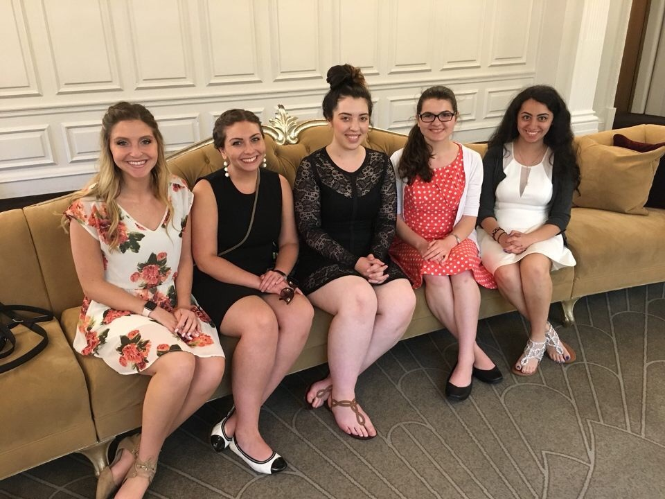

This morning we enjoyed a chance to sleep in, many gathered in each other’s flats for coffee. 4A now housed a sick, bedridden Patrick. All (sans Pat) met in the lobby dressed in Sunday finery, and we tried a new train line (open only on weekends) that was but a 2 minute walk from Richmond Court. Who knew?
We emerged from the tube to see Christopher Wren’s masterpiece overtake the complete skyline before us. In the courtyard of St. Paul's Cathedral, Engle explained why a statue of John Wesley was present (hint: he was Anglican before founding the Methodist faith, and lived by St. Paul’s cathedral). Engle pointed out many architectural features of the baroque; namely, the attention to scale and proportions. For example, in order to have the altar candlesticks look in proportion to the altar (say, 3-feet tall from the nave), they had to be cast at an incredible 14-foot height. We scanned the copper dome to find indentations that were caused by German bombs dropped by the Luftwaffe during the blitz of WWII. Fortunately, the bombs “bounced” off the dome and the cathedral survived. Then we all found our places in seats under the dome, enwrapped and engulfed in such a transcendent space. But there, in that moment, Chase decided to share his deep, spiritual thought: “Give me a baseball, and I bet I could throw it hard enough to hit the top of the ceiling". Words more pure with honesty have never been spoken.
St. Paul's Cathedral

The service began with an elaborate procession of choirboys, priests, candles, and banners. The organ roared. After a sermon encouraging us to "just forget about rules", the highlight was singing the closing hymn “Lord of the Dance.”
After church, the women went with Engle for high tea at the Georgian, and Craig treated the gentlemen to lunch. By this time, Pat’s “Sundayitis” was over and, amazingly, he felt well enough to join in on the free lunch at Hand and Flower. Many then tubed to Oxford Circus to check out designer stores, and London Lululemon. Nic opted for a “magic” set so that he could perform for the group that night. Nic was encouraged to continue the educational track he was on, and leave magic for America’s Got Talent contenders. A small piece of him died that night.
The Ladies Before High Tea with Engle at The Georgian
